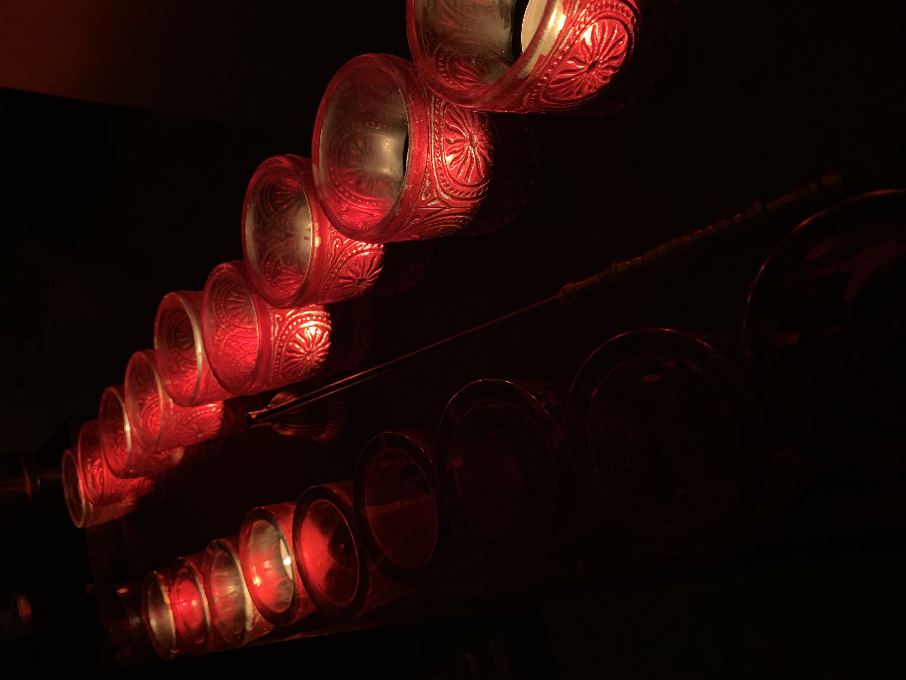

Gottesdienste und Gemeinde
Jeden Sonntag findet die heilige Liturgie um 10:00 statt. Die Dauer beträgt ungefähr 1h 30min.
Bei besonderen Festen wie Weihnachten oder Ostern informieren wir Sie hier über spezielle Regelungen.
Außerdem kann es zu anderen Kirchlichen Feiertagen zusätzliche Gottesdienste geben. Auch darüber werden Sie hier regelmäßig informiert.
Persönlche Anlässe, für die ein Gottesdienst bestellt werden kann:
- Taufe
- Kirchliche Trauung
- Sterbefeier
Haben Sie einen speziellen Wunsch für einen Gottesdienst. Wenden Sie sich hier bitte an unseren Pfarrer Meron Molcyko.